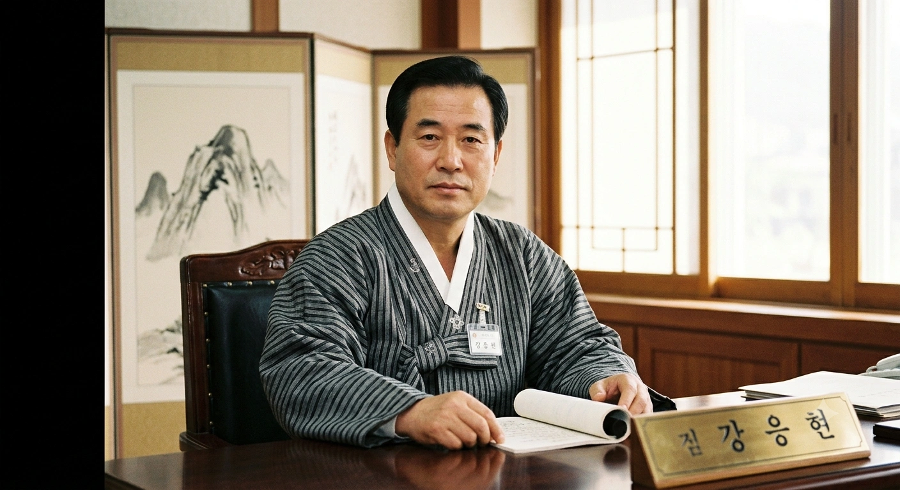

- 1. 개요
- 2. 상세
- 3. 역대 도지사 목록
- 3.1. 관선 도지사 (1948 ~ 1995)
- 3.2. 민선 도지사 (1995 ~ 현재)
- 4. 생존 중인 전직 민선 도지사
- 5. 역대 선거 결과
- 5.1. 제7회 전국동시지방선거
- 5.2. 제8회 전국동시지방선거
- 5.3. 제9회 전국동시지방선거
- 6. 권한 및 역할
- 7. 여담
1. 개요
덕빈남도를 대표하고, 덕빈남도의 사무를 총괄하는 지방자치단체의 장이다. 차관급 정무직 공무원에 해당한다.
1995년 지방자치제 전면 실시와 함께 민선 도지사가 선출되기 시작했다. 현재 제38·39대 도지사는 김영산으로, 2026년 치러진 제9회 전국동시지방선거에서 67.33%라는 압도적 득표율로 재선에 성공하며 흔들림 없는 도정을 이끌어가고 있다.
2. 상세
덕빈남도는 효빈광역시, 덕빈북도와 마찬가지로 민주당계 정당의 절대 텃밭으로 분류된다. 역대 민선 도지사 선거 결과를 보면 단 한 번의 예외도 없이 모두 민주당계 정당 후보(양원승, 강응현, 조삼현, 김영산)가 압승을 거두었다.
현임 김영산 도지사는 시의원을 거쳐 민선 5·6기 덕주시장을 연임하며 행정력을 인정받은 베테랑 행정가다. 특히 시장 재임 시절 현재의 조전구(조전뉴타운)의 기틀을 완벽하게 다져놓아 '조전구의 아버지'라는 자랑스러운 별명을 가지고 있다. 또한, 겉으로는 훌륭한 행정가지만 서브컬처 팬덤 사이에서는 카린의 상징색인 로열 블루(Royal Blue) 광인으로 더 악명이 자자하다.
3. 역대 도지사 목록
3.1. 관선 도지사 (1948 ~ 1995)
| 대수 | 정당 / 임명 주체 | 이름 | 임기 | 비고 |
|---|---|---|---|---|
| 관선 1차 (1948 ~ 1960) | ||||
| 1대 | 이승만 정부 | 이경수 | 1948.09.12 ~ 1949.08.15 | 초대 덕빈남도 지사. |
| 2대 | 이승만 정부 | 박성호 | 1949.08.16 ~ 1949.12.12 | 임기가 고작 4개월 남짓이다(...) |
| 3대 | 이승만 정부 | 윤철민 | 1949.12.13 ~ 1951.10.08 | 6.25 전쟁 발발 당시 도지사. |
| 4대 | 이승만 정부 | 김태윤 | 1951.10.15 ~ 1952.09.18 | |
| 5대 | 이승만 정부 | 정진우 | 1952.09.19 ~ 1955.08.31 | |
| 6대 | 이승만 정부 | 최형석 | 1955.09.01 ~ 1956.09.20 | |
| 7대 | 이승만 정부 | 한명재 | 1956.09.21 ~ 1957.03.12 | |
| 8대 | 이승만 정부 | 오기환 | 1957.03.13 ~ 1959.05.10 | |
| 9대 | 이승만 정부 | 송대원 | 1959.05.11 ~ 1960.05.09 | 4.19 혁명 직후 물러났다. |
| 10대 | 허정 내각 | 류상철 | 1960.05.10 ~ 1960.06.28 | |
| 민선 1차 (1960 ~ 1961) | ||||
| 13대 | 신민당 | 강석훈 | 1960.12.29 ~ 1961.05.23 | 5.16 군사정변으로 인해 당선된 지 반년도 안 되어 강제 해임되었다(...) |
| 관선 2차 (1961 ~ 1995) | ||||
| 14대 | 국가재건최고회의 | 조민성 | 1961.05.25 ~ 1961.08.22 | |
| 15대 | 국가재건최고회의 | 임동길 | 1961.08.23 ~ 1963.12.15 | |
| 16대 | 박정희 정부 | 백기철 | 1963.12.17 ~ 1965.02.20 | |
| 17대 | 박정희 정부 | 서종현 | 1965.02.21 ~ 1968.02.18 | |
| 18대 | 박정희 정부 | 구본탁 | 1968.02.19 ~ 1971.06.15 | |
| 19대 | 박정희 정부 | 안성재 | 1971.06.20 ~ 1973.10.20 | |
| 20대 | 박정희 정부 | 홍영태 | 1973.10.21 ~ 1975.12.24 | |
| 21대 | 박정희 정부 | 문종수 | 1975.12.25 ~ 1978.12.24 | |
| 22대 | 전두환 정부 | 유재광 | 1978.12.25 ~ 1980.07.15 | |
| 23대 | 최규하 정부 | 차상민 | 1980.07.16 ~ 1983.10.12 | |
| 24대 | 전두환 정부 | 손기영 | 1983.10.13 ~ 1986.08.25 | |
| 25대 | 전두환 정부 | 노명식 | 1986.08.26 ~ 1988.05.18 | |
| 26대 | 노태우 정부 | 하성준 | 1988.05.16 ~ 1990.06.12 | |
| 27대 | 노태우 정부 | 송진환 | 1990.06.19 ~ 1992.04.19 | |
| 28대 | 노태우 정부 | 황대근 | 1992.04.20 ~ 1993.03.02 | |
| 29대 | 김영삼 정부 | 박중호 | 1993.03.03 ~ 1994.09.21 | |
| 30대 | 김영삼 정부 | 이창섭 | 1994.09.22 ~ 1995.06.30 | 마지막 관선 도지사. |
3.2. 민선 도지사 (1995 ~ 현재)
1995년 제1회 전국동시지방선거 이후로 주민 직선제를 통해 선출된 도지사들이다.
| 대 | 사진 | 이름 | 임기 | 기 | 정당 | 출신지 | 비고 | |
|---|---|---|---|---|---|---|---|---|
| 민선 2차 (선출직) | ||||||||
| 31대 | 양원승 (陽原承) | 1995년 7월 1일 ~ 1998년 6월 30일 | 1 | 무소속 | 덕남 석창 | 제1회 전국동시지방선거에서 무소속 돌풍을 일으키며 당선되었다. | ||
| 32대 | 1998년 7월 1일 ~ 2002년 6월 30일 | 2 | 새정치국민회의 | |||||
| 33대 | 2002년 7월 1일 ~ 2006년 6월 30일 | 3 | 새천년민주당 | 당적을 바꿔가며 3선 연임에 성공했다. | ||||
| 34대 |  |
강응현 (姜應縣) | 2006년 7월 1일 ~ 2010년 6월 30일 | 4 | 민주당 | 덕북 덕현 | 출신지는 분명 덕북인데 덕남지사로 당선되는 기염을 토했다. |
|
| 35대 | 조삼현 (曺森縣) | 2010년 7월 1일 ~ 2014년 6월 30일 | 5 | 민주당 | 덕남 운진 | |||
| 36대 | 2014년 7월 1일 ~ 2018년 6월 30일 | 6 | 새정치민주연합 | |||||
| 37대 | 2018년 7월 1일 ~ 2022년 6월 30일 | 7 | 더불어민주당 | 양원승 지사에 이어 두 번째로 3선 고지에 올랐다. |
||||
| 38대 | 김영산 (金瑛山) | 2022년 7월 1일 ~ 2026년 6월 30일 | 8 | 더불어민주당 | 덕남 덕주 | |||
| 39대 | 2026년 7월 1일 ~ 재임 중 | 9 | 재선 성공. 제9회 전국동시지방선거에서 67.33%로 압승. | |||||
4. 생존 중인 전직 민선 도지사
5. 역대 선거 결과
| 역대 민선 덕빈남도지사 | ||||
| 1995 | 1998 | 2002 | 2006 | 2010 |
| 무소속 | 새정치국민회의 | 새천년민주당 | 민주당 | 민주당 |
| 양원승 | 양원승 | 양원승 | 강응현 | 조삼현 |
| 2014 | 2018 | 2022 | 2026 | |
| 새정치민주연합 | 더불어민주당 | |||
| 조삼현 | 조삼현 | 김영산 | 김영산 | |
[ 펼치기 · 접기 ] 제1회 ~ 제6회 덕빈남도지사 선거 결과
| 선거 (연도) | 총 투표수 | 상세 결과 |
|---|---|---|
| 제1회 (1995) | 1,189,230 |
1위: 무소속 양원승 (38.5%) 2위: 민주자유당 백영태 (32.1%) 3위: 민주당 서진수 (25.4%) 4위: 자유민주연합 윤상학 (4.0%) |
| 제2회 (1998) | 1,142,551 |
1위: 새정치국민회의 양원승 (54.2%) 2위: 한나라당 구본석 (35.8%) 3위: 국민신당 이정우 (10.0%) |
| 제3회 (2002) | 1,115,204 |
1위: 새천년민주당 양원승 (61.5%) 2위: 한나라당 하석진 (33.1%) 3위: 민주노동당 강선우 (5.4%) |
| 제4회 (2006) | 1,085,412 |
1위: 민주당 강응현 (48.3%) 2위: 한나라당 지상원 (35.6%) 3위: 열린우리당 이경철 (11.2%) 4위: 민주노동당 서진수 (4.9%) |
| 제5회 (2010) | 1,053,889 |
1위: 민주당 조삼현 (55.4%) 2위: 한나라당 구본석 (34.2%) 3위: 민주노동당 석예문 (10.4%) |
| 제6회 (2014) | 1,038,715 |
1위: 새정치민주연합 조삼현 (59.7%) 2위: 새누리당 이박성 (33.1%) 3위: 통합진보당 강숭은 (7.2%) |
5.1. 제1회 전국동시지방선거 (1995년 6월 27일)
 덕빈남도지사 덕빈남도지사
|
|||
|---|---|---|---|
| 기호 | 이름 | 득표수 | 순위 |
| 정당 | 득표율 | 비고 | |
| 1 | 양원승 | 457,853 | 1위 |
| 무소속 | 38.50% | 당선 | |
| 2 | 백영태 | 381,743 | 2위 |
| 민주자유당 | 32.10% | 낙선 | |
| 3 | 서진수 | 302,064 | 3위 |
| 민주당 | 25.40% | 낙선 | |
| 4 | 윤상학 | 47,570 | 4위 |
| 자유민주연합 | 4.00% | 낙선 | |
총 투표수 1,189,230표. 덕빈남도 최초의 직선제 도지사 선거. 여권(민주자유당)과 야권(민주당) 후보들이 팽팽하게 맞붙은 가운데, 무소속으로 출마한 양원승 후보가 돌풍을 일으키며 38.5%의 득표율로 초대 민선 도지사에 오르는 이변을 연출했다.
5.2. 제2회 전국동시지방선거 (1998년 6월 4일)
|
덕빈남도지사
|
|||
|---|---|---|---|
| 기호 | 이름 | 득표수 | 순위 |
| 정당 | 득표율 | 비고 | |
| 1 | 양원승 | 619,262 | 1위 |
| 새정치국민회의 | 54.20% | 당선 | |
| 2 | 구본석 | 409,033 | 2위 |
| 한나라당 | 35.80% | 낙선 | |
| 3 | 이정우 | 114,256 | 3위 |
| 국민신당 | 10.00% | 낙선 | |
총 투표수 1,142,551표. 현역 프리미엄을 안고 여당인 새정치국민회의에 합류한 양원승 지사가 과반이 넘는 득표로 한나라당 구본석 후보를 여유 있게 따돌리며 재선에 성공했다.
5.3. 제3회 전국동시지방선거 (2002년 6월 13일)
|
덕빈남도지사
|
|||
|---|---|---|---|
| 기호 | 이름 | 득표수 | 순위 |
| 정당 | 득표율 | 비고 | |
| 1 | 양원승 | 685,850 | 1위 |
| 새천년민주당 | 61.50% | 당선 | |
| 2 | 하석진 | 369,132 | 2위 |
| 한나라당 | 33.10% | 낙선 | |
| 3 | 강선우 | 60,222 | 3위 |
| 민주노동당 | 5.40% | 낙선 | |
총 투표수 1,115,204표. 양원승 지사가 당적을 새천년민주당으로 옮겨 출마, 60%를 넘기는 압승으로 가볍게 3선 연임 고지에 올랐다.
5.4. 제4회 전국동시지방선거 (2006년 5월 31일)
|
덕빈남도지사
|
|||
|---|---|---|---|
| 기호 | 이름 | 득표수 | 순위 |
| 정당 | 득표율 | 비고 | |
| 1 | 강응현 | 524,254 | 1위 |
| 민주당 | 48.30% | 당선 | |
| 2 | 지상원 | 386,406 | 2위 |
| 한나라당 | 35.60% | 낙선 | |
| 3 | 이경철 | 121,566 | 3위 |
| 열린우리당 | 11.20% | 낙선 | |
| 4 | 서진수 | 53,186 | 4위 |
| 민주노동당 | 4.90% | 낙선 | |
총 투표수 1,085,412표. 전국적으로 열린우리당발 여권 심판론이 거세게 불었던 선거다. 그러나 덕빈남도에서는 열린우리당이 부진한 사이, 구 야권의 상징인 민주당 소속으로 나선 강응현 후보가 반사이익을 얻으며 한나라당의 파상공세를 꺾고 승리했다. 출신지가 덕북인 사람이 덕남에서 당선된 흥미로운 케이스이기도 하다.
5.5. 제5회 전국동시지방선거 (2010년 6월 2일)
|
덕빈남도지사
|
|||
|---|---|---|---|
| 기호 | 이름 | 득표수 | 순위 |
| 정당 | 득표율 | 비고 | |
| 1 | 조삼현 | 583,854 | 1위 |
| 민주당 | 55.40% | 당선 | |
| 2 | 구본석 | 360,430 | 2위 |
| 한나라당 | 34.20% | 낙선 | |
| 3 | 석예문 | 109,605 | 3위 |
| 민주노동당 | 10.40% | 낙선 | |
총 투표수 1,053,889표. 새로운 민주당 주자로 나선 조삼현 후보가 55.4%의 득표율을 올리며 보수 정당의 추격을 뿌리치고 도지사에 올랐다. 이로써 덕빈남도는 확고한 민주당 우세 지역임이 다시 입증되었다.
5.6. 제6회 전국동시지방선거 (2014년 6월 4일)
|
덕빈남도지사
|
|||
|---|---|---|---|
| 기호 | 이름 | 득표수 | 순위 |
| 정당 | 득표율 | 비고 | |
| 1 | 조삼현 | 620,112 | 1위 |
| 새정치민주연합 | 59.70% | 당선 | |
| 2 | 이박성 | 343,814 | 2위 |
| 새누리당 | 33.10% | 낙선 | |
| 3 | 강숭은 | 74,789 | 3위 |
| 통합진보당 | 7.20% | 낙선 | |
총 투표수 1,038,715표. 무난한 도정 운영 평가를 바탕으로 현직 조삼현 지사가 약 60%에 달하는 득표율을 올리며 이변 없이 재선에 성공했다.
5.7. 제7회 전국동시지방선거 (2018년 6월 13일)
|
덕빈남도지사
|
|||
|---|---|---|---|
| 기호 | 이름 | 득표수 | 순위 |
| 정당 | 득표율 | 비고 | |
| 1 | 조삼현 | 648,155 | 1위 |
| 더불어민주당 | 64.12% | 당선 | |
| 2 | 이박성 | 263,923 | 2위 |
| 자유한국당 | 26.11% | 낙선 | |
| 3 | 박현우 | 65,395 | 3위 |
| 바른미래당 | 6.47% | 낙선 | |
| 4 | 석예문 | 33,360 | 4위 |
| 정의당 | 3.30% | 낙선 | |
총 투표수 1,010,833표. 현직 지사 조삼현 후보가 박근혜 대통령 탄핵 파동의 여파에 힘입어 무려 64.12%를 얻어 가볍게 3선 도지에 안착했다. 이 동네는 3선이 기본 패시브다. 당내 경선에서 조삼현에게 밀려 출마가 좌절된 김영산 전 시장은 4년간의 야인 시절을 맞이하게 된다.
5.8. 제8회 전국동시지방선거 (2022년 6월 1일)
|
덕빈남도지사
|
|||
|---|---|---|---|
| 기호 | 이름 | 득표수 | 순위 |
| 정당 | 득표율 | 비고 | |
| 1 | 김영산 | 649,574 | 1위 |
| 더불어민주당 | 65.40% | 당선 | |
| 2 | 서현식 | 290,024 | 2위 |
| 국민의힘 | 29.20% | 낙선 | |
| 3 | 석예문 | 31,783 | 3위 |
| 진보당 | 3.20% | 낙선 | |
| 4 | 구신간 | 21,851 | 4위 |
| 무소속 | 2.20% | 낙선 | |
총 투표수 993,232표. 보수 진영이 윤석열 정부 출범 컨벤션 효과를 등에 업고 맹렬히 추격했으나, 김영산 후보가 자신의 최대 본진인 덕주시 조전구와 공업도시 방산시 등에서 몰표를 얻으며 넉넉하게 당선, 첫 도지사 취임에 성공했다.
5.9. 제9회 전국동시지방선거 (2026년)
|
덕빈남도지사
|
|||
|---|---|---|---|
| 기호 | 이름 | 득표수 | 순위 |
| 정당 | 득표율 | 비고 | |
| 1 | 김영산 | 682,496 | 1위 |
| 더불어민주당 | 66.70% | 당선 | |
| 2 | 서현식 | 228,181 | 2위 |
| 국민의힘 | 22.30% | 낙선 | |
| 3 | 구신간 | 76,742 | 3위 |
| 조국혁신당 | 7.50% | 낙선 | |
| 4 | 석예문 | 35,813 | 4위 |
| 진보당 | 3.50% | 낙선 | |
총 투표수 1,023,232표. 비상계엄 파동 여파와 함께 이재명 정부의 강력한 허니문 효과, 그리고 '오션 덕빈(Ocean Deokbin)' 인프라 정책의 전폭적인 신뢰에 힘입어 김영산 지사가 무려 66.70%라는 압도적인 득표율로 가볍게 재선 연임에 성공했다. 조국혁신당 구신간 후보가 진보 표심의 일부를 흡수하며 7% 넘게 득표해 3위로 선전했으나 판세에 영향을 미치진 못했고, 보수 진영(서현식)은 처참한 성적표를 받아들여야 했다.
6. 권한 및 역할
덕빈남도지사는 덕빈남도의 행정 사무를 총괄하며, 도 소속 공무원을 지휘·감독한다.
- 자치입법권: 조례안 제출권 및 공포권
- 조직편성권: 도청 및 산하 기관 조직 개편
- 인사권: 부지사, 실·국장 등 소속 공무원 임면권, 산하 지방공사(덕빈남도개발공사 등) 사장 임명권
- 재정권: 예산안 편성 및 집행권
7. 여담
- 윤대환 전 시장과의 피 튀기는 악연: 초선 시의원 시절, 이웃 동네 폭군 윤대환이 자신의 사익(두청운수 옹호)을 위해 덕빈남도행 시외버스를 대거 칼질하자 항의하러 갔다가 시청 로비 계단에서 굴러떨어지는 만행을 당했다. 이때 깁스를 감은 김영산 지사가 훗날 두청운수 불매운동을 이끌며 처절한 복수에 성공했다.
- 로열 블루(Royal Blue) 강박증: 최애 캐릭터인 아사카 카린의 상징색이 로열 블루인 탓에 공식 석상에서는 무조건 선명한 파란색 넥타이만 고집한다. 아내가 옷장에 있던 파란 넥타이를 전부 압수하자 출근길에 굳이 새 파란 넥타이를 사서 매고 청사에 들어왔다는 미친 일화가 존재한다.
- "광역버스는 덕빈남도까지 안가(...)" 사태: 여객법 제한 때문에 효빈시 로열 블루 광역버스가 도내에 들어오지 못하자, 운행 거리 제한이 없는 시외버스 노선에 기어코 광역버스와 똑같은 로열 블루 도색을 적용해버리는 기행을 저질렀다. 이 때문에 비싼 시외버스 요금을 물어내는 승객들의 지갑이 사심 탓에 털리고 있다 카더라.